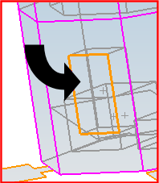
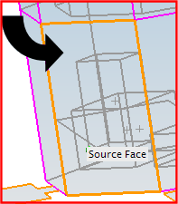
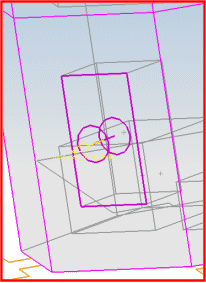
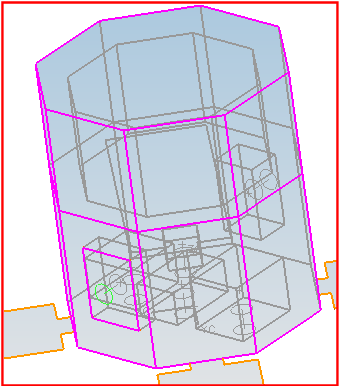

Define the footprints for the equipment boxes
Although you will not mesh the equipment boxes themselves, you will mesh the footprint of where each box is mounted to the satellite wall. The Mesh Mating command lets you assemble individual meshes at this footprint. The software ensures that connectivity is maintained at the mating position.
 Simulation Navigator
Simulation Navigator
-

 Polygon Geometry (expand)
Polygon Geometry (expand)
-
Select the Polygon Body nodes for all hidden polygon geometry (to show all polygon geometry).
 Mesh Mating Condition (Model Preparation toolbar)
Mesh Mating Condition (Model Preparation toolbar)
-
Type
Manual Creation

-
For a given box, use QuickPick to select the face that is mounted to the satellite wall or floor. This is the source face of the mesh mating condition.

-
the face of the satellite wall or floor to which the equipment box is mounted (use QuickPick to select the correct face). This is the target face of the mesh mating condition.

-
Mesh Mating Type

-
Search Distance
1.0
This value specifies that mesh mating occurs if the two faces are a maximum of 1 inch apart. The equipment is mounted on the wall (or floor), but the geometry has taken into account the wall and floor thickness.
-
Apply
The circles represent the mesh mating condition
-
Repeat the above steps to define the footprint for all six equipment boxes.

-
Cancel
Mesh Mating Conditions dialog box